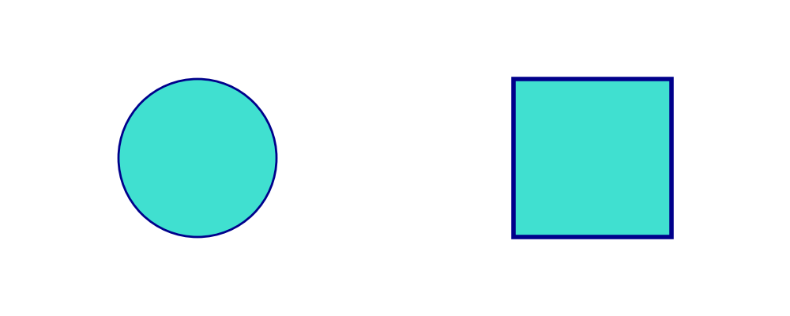

========================================
Creating Custom Presets with ThemePreset
Drawlib provides official style presets (default, essentials, monochrome), but you can also define custom style presets for your project using ThemePreset.
A ThemePreset is a dataclass containing Style objects for key style roles.
ThemePreset Definition
ThemePreset accepts the following attributes:
primary: Primary style object.light: Light style object.bold: Bold style object.flat: Flat style object.solid: Solid style object.dashed: Dashed style object.background_color(optional): Default background color tuple (default is white).sourcecode_font(optional): Default font for code rendering.
Defining a Custom Preset
Here is an example of creating a custom preset:
from drawlib.canvas import config, save
from drawlib.colors import Colors140
from drawlib.preset_styles import ThemePreset
from drawlib.shapes import circle, rectangle
from drawlib.types import Style
custom_preset = ThemePreset(
primary=Style(fill_color=Colors140.Turquoise, line_color=Colors140.DarkBlue, line_width=2),
light=Style(fill_color=Colors140.LightCyan, line_color=Colors140.DarkBlue, line_width=1),
bold=Style(fill_color=Colors140.Turquoise, line_color=Colors140.DarkBlue, line_width=4),
flat=Style(fill_color=Colors140.Turquoise, line_color=None, line_width=0),
solid=Style(fill_color=None, line_color=Colors140.DarkBlue, line_width=2),
dashed=Style(fill_color=None, line_color=Colors140.DarkBlue, line_width=2, line_style="dashed"),
)
config(width=100, height=40)
circle(xy=(25, 20), radius=10, style=custom_preset.primary)
rectangle(xy=(75, 20), width=20, height=20, style=custom_preset.bold)
save()

Executing this code produces the following image:
from drawlib.canvas import config, save
from drawlib.colors import Colors140
from drawlib.preset_styles import ThemePreset
from drawlib.shapes import circle, rectangle
from drawlib.types import Style
custom_preset = ThemePreset(
primary=Style(fill_color=Colors140.Turquoise, line_color=Colors140.DarkBlue, line_width=2),
light=Style(fill_color=Colors140.LightCyan, line_color=Colors140.DarkBlue, line_width=1),
bold=Style(fill_color=Colors140.Turquoise, line_color=Colors140.DarkBlue, line_width=4),
flat=Style(fill_color=Colors140.Turquoise, line_color=None, line_width=0),
solid=Style(fill_color=None, line_color=Colors140.DarkBlue, line_width=2),
dashed=Style(fill_color=None, line_color=Colors140.DarkBlue, line_width=2, line_style="dashed"),
)
config(width=100, height=40)
circle(xy=(25, 20), radius=10, style=custom_preset.primary)
rectangle(xy=(75, 20), width=20, height=20, style=custom_preset.bold)
save()

Custom ThemePreset execution
© 2026 drawlib by Yuichi Ito. Released under the Apache 2.0 License.